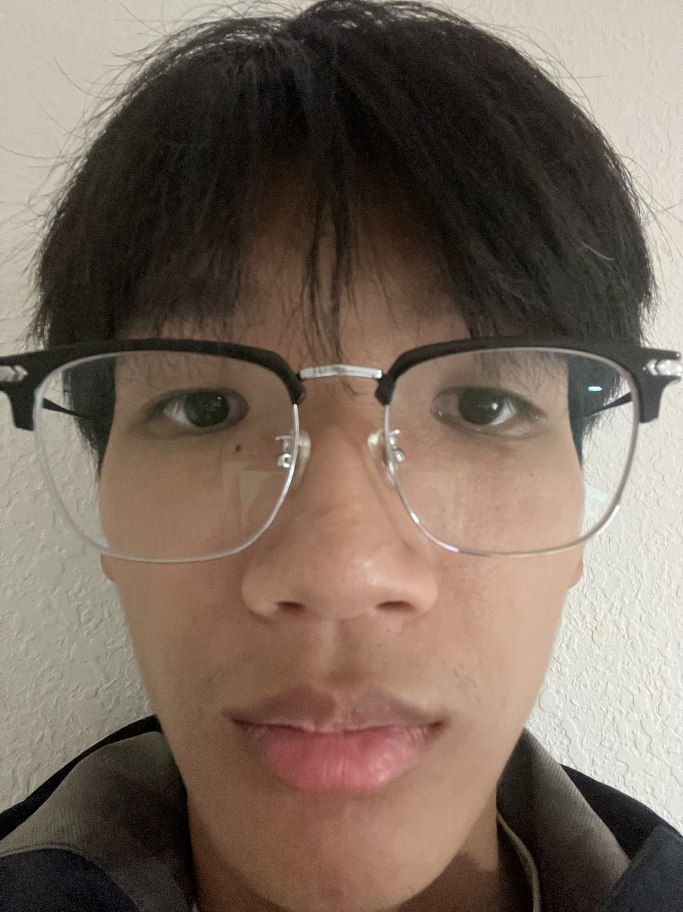
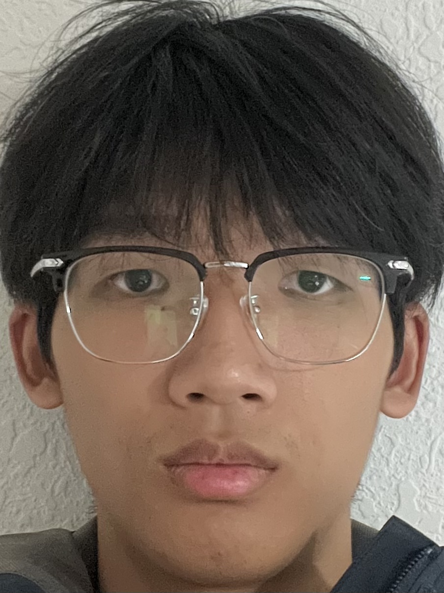

Project 0: Becoming Friends with Your Camera
Part 1: Selfie - The Wrong Way vs. The Right Way
I took a picture of myself from close up, resulting in a distorted selfie. Then, I stepped back, zoomed in, and took a second picture to get a much better portrait.

Wrong Way (Close-up)

Right Way (Distance + Zoom)
Part 2: Architectural Perspective Compression
I repeated the same procedure for a street scene (the street is behind the bag and the fence). I took a photo from a distance with zoom, and then walked closer to take a second photo without zoom. The street in the first picture looks flattened compared to the second one.

Flattened (Distance + Zoom)

Normal (Close-up)
Part 3: The Dolly Zoom
To duplicate the classic "Vertigo shot," I simultaneously moved the camera back and zoomed in while keeping the size of the stone unchanged. I then combined them into the GIF below.